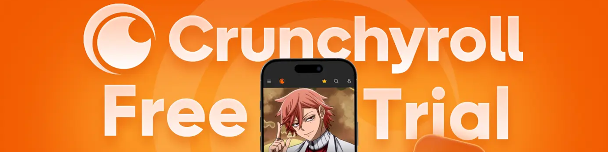
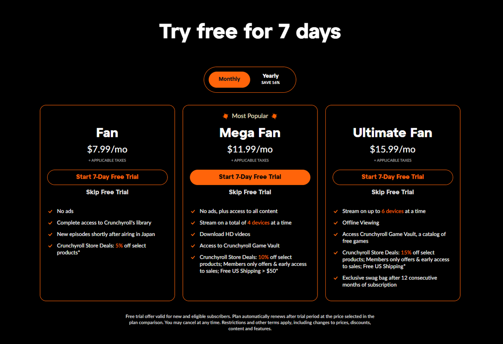

如何在 Crunchyroll 上免費試用？解鎖最新動漫
作爲一名狂熱的動漫迷，我大部分的空閒時間都用來觀看《進擊的巨人》、《柔術海戰》、《我的英雄學院》以及最近大熱的《單機升級》等動漫——所有這些動漫我都可以一遍又一遍地觀看。
但在不同的平臺之間跳來跳去尋找劇集常常讓人感到沮喪。但當我發現 Crunchyroll 後，情況發生了改變——這是一個專注於動漫和漫畫的流媒體平臺。它幾乎涵蓋了所有熱門作品，並且已經擁有超過1700 萬訂閱用戶！對於像我這樣的動漫愛好者來說，它簡直就是天堂。
最讓我興奮的是它的 免費試用政策 ，這意味着我可以毫無壓力地狂看我最喜歡的節目。在本文中，我將帶你了解 Crunchyroll 免費試用的所有信息——如何注冊、資格要求、可以訪問的內容以及如何充分利用試用期的技巧。如果你也在尋找最簡單的免費觀看動漫的 方法，那麼本指南正是你所需要的。

Crunchyroll 提供免費試用嗎？
是的，Crunchyroll 提供 7 天免費試用 。對於仍不確定是否付費訂閱的用戶，這是一個絕佳的試用機會。新用戶只需選擇一個套餐 ——Fan、Mega Fan 或 Ultimate Fan——即可 解鎖最新動漫的無廣告流媒體觀看體驗。在享受了一周的 Premium 會員權益後，你可以決定是否繼續訂閱。
如何獲得 Crunchyroll 免費試用資格？
要享受 Crunchyroll 免費試用 ，你需要滿足一些條件：
- 僅限新用戶 ：你必須是 Crunchyroll 的新用戶。如果你之前已付費訂閱，則無法享受免費試用。
- 每個帳戶僅限一次試用 ：如果你已經使用過 Crunchyroll 免費試用版，則不能使用相同的電子郵件或付款方式再次注冊。
- 需要有效的付款方式 ：你必須輸入有效的信用卡或 PayPal 賬戶才能開始試用。如果付款方式無效，試用將無法開始。
如果你滿足這三個要求，你可以享受Crunchyroll Premium 的 7 天免費試用 。
Crunchyroll 計劃和定價
Crunchyroll 提供三種主要的付費方案和一個免費版本，以滿足不同的觀看需求。在開始免費試用之前，你可以從三種高級方案（ Fan、Mega Fan 和 Ultimate Fan） 中選擇，並解鎖 Crunchyroll Premium 的 7 天免費試用 。
| 計劃 | 每月價格 | 主要特點 |
|---|---|---|
| 免費版 | 0 | 包含廣告、內容有限、單一設備 |
| 粉絲 | 7.99 美元 | 無廣告、高清流媒體、1 臺設備 |
| 超級粉絲 | 11.99美元 | 無廣告、離線下載、最多 4 臺設備、商店折扣 |
| 終極粉絲 | 15.99 美元 | 無廣告、最多 6 臺設備、更大折扣、獨家禮品袋 |
這三種方案的適用性取決於你的需求。如果你獨自觀看動漫， Fan 方案就足夠了。但是，如果你想與家人或朋友分享，或者你更喜歡在通勤或旅行期間離線觀看， Mega Fan 方案更適合你。對於想要擁有最多設備和額外福利的忠實粉絲來說， Ultimate Fan 方案是理想之選。雖然價格較高，但它提供了極致的服務體驗。
如何取消 Crunchyroll 免費試用？
如果你覺得官網的訂閱費用太高，你可以在7天試用期結束前隨時取消，以 避免被自動扣款 。
請按照以下步驟取消你的 Crunchyroll 免費試用：
登錄你的 Crunchyroll 帳戶→點擊右上角的個人資料圖標訪問 "我的帳戶"→ 選擇 "高級會員資格"→ 點擊 "取消會員資格"
如何申請 Crunchyroll 免費試用？
這個過程並不復雜——只需按照以下步驟操作，你就可以立即開始你的 免費動漫之旅。
步驟 1： 訪問 Crunchyroll 官方網站 。向下滾動直到找到 7 天免費試用版 部分，然後開始選擇你的套餐。
最受歡迎的選項是 超級粉絲套餐 ，但你也可以選擇 粉絲 或 終極粉絲 等級。所有高級套餐均可免費試用。選擇所需套餐後，只需點擊" 開始免費試用" 即可激活。
第二步： 創建新賬戶並快速登錄。
輸入你的電子郵件並設置密碼，或使用你的Google 或 Apple 帳戶立即登錄。

步驟 3： 輸入你的付款詳情以開始免費試用。
這是激活Crunchyroll 免費試用 的關鍵步驟——你需要提供有效的付款方式。請放心，我們不會立即向你扣款；此步驟僅用於驗證你的卡是否有效。
你可以輸入你的信用卡或借記卡詳細信息（卡號、有效期、CVV 碼和賬單郵編）。部分地區也支持 PayPal 。驗證過程中，系統可能會暫時扣款約 1 美元，該金額將在幾天內自動退還。
確認你的信息後，單擊 "開始免費試用" 按鈕，你將立即解鎖完整的 Crunchyroll Premium 體驗。
如果免費試用不起作用，我該怎麼辦？
許多用戶在使用Crunchyroll 免費試用版 時會遇到問題。如果你遇到這種情況，請檢查以下內容：
- 確認帳戶資格： 確保你是 新用戶 。如果你之前已付費訂閱或已使用免費試用，則無法開始新的訂閱。
- 檢查付款詳情： 確保你的卡/PayPal 信息正確，卡未過期，並且有足夠的餘額來完成小額授權保留。
- 確認地區可用性： 並非所有地區都提供免費試用。請查看官方網站，了解你所在地區是否符合條件。
- 禁用廣告攔截器和 VPN： 關閉任何廣告攔截擴展程序或 VPN——它們可能會幹擾注冊過程。
如果以上方法均無效， 請聯系 Crunchyroll 支持 尋求幫助。
如何以更低的價格訂閱 Crunchyroll？
在體驗了 Crunchyroll 7 天的免費試用 後，包括我在內的許多用戶都難以割舍無廣告的觀看體驗、快速的同步更新以及整體上出色的動漫體驗。自然而然地，人們會問："我應該繼續付費訂閱嗎？"但看看官方定價，最低的無廣告套餐 每月 7.99 美元 ，對很多人來說可能有點貴。
如果你既想保留訂閱，又想省錢，我推薦一個更明智的選擇 —— 環球巴士。通過 環球巴士 訂閱 Crunchyroll 的費用不到官方 Fan 套餐的一半，同時還能享受與 Mega Fan 套餐 相同的功能。這真是兩全其美——只需花費一小部分費用即可獲得完整的 Premium 訪問權限。

如何獲取額外的 Crunchyroll 免費試用優惠
完成標準的 7 天 Crunchyroll 免費試用 後，你仍然可以通過以下方式解鎖額外的試用機會：
1.百思買延長粉絲試用
自去年以來，Crunchyroll 與百思買 (Best Buy) 合作推出了爲期 30 天的粉絲級延長免費試用，有效期至今年 10 月 25 日。用戶只需在百思買平臺上領取專屬兌換碼，即可在 Crunchyroll 上解鎖粉絲計劃的全部權益，包括無廣告觀看、同步播出劇集和高清流媒體播放。
2.Xbox Game Pass Ultimate 獨家 60 天粉絲試用
如果你訂閱 Xbox Game Pass Ultimate，則有資格兌換60 天的 Crunchyroll Fan 試用版。此促銷活動從 7 月 22 日持續到 8 月 22 日，兌換有效期至 8 月 29 日。符合條件的用戶可以通過 Xbox Game Pass 特權部分領取延長的免費試用期。
3. 促銷代碼
一些優惠券平臺（例如 SimplyCodes）已經發布了 CRNEW、CRAFF15 和 WELCOME15 等折扣碼，這些折扣碼提供 15% 的折扣，有時還會帶有"免費試用"的標籤。不妨試試這些代碼，看看它們是否仍然有效。
Crunchyroll 免費試用期間你可以觀看什麼？
如果你剛剛創建了 Crunchyroll 帳戶並且不知道從哪裏開始，這些"必看"動漫非常適合開啓你的免費試用之旅。
《Solo Leveling》 ——這部熱門作品被譽爲"年度最佳動漫"。憑借令人驚嘆的視覺效果、快節奏的故事情節以及 Crunchyroll 上破紀錄的收視率，它是完美的起點。
《進擊的巨人》 ——一部融合情感深度與頂級動畫的史詩巨作。被廣泛認爲是本世紀最具影響力的動畫之一。
Crunchyroll 上其他不容錯過的影片包括：
《鬼滅之刃》 《電鋸人》 《我獨自升級》 《進擊的巨人》 《海賊王》 《咒術回戰》 《星際牛仔》 《鋼之煉金術師 FA》 《葬送的芙莉蓮》 《膽大黨》
結論
Crunchyroll 免費試用 觸手可及——這是一種探索廣闊動漫世界的絕佳且無風險的方式。只需幾分鍾，你就可以注冊並享受無廣告、流暢的流媒體服務，觀看最新劇集，並完全沉浸在你喜愛的節目中。
如果你在試用期結束後決定繼續訂閱，但覺得官方價格過高，不妨考慮我推薦的替代方案：環球巴士。只需不到 4 美元 ，你就可以享受 Crunchyroll 付費會員享有的相同高級功能。這是在不超支的情況下繼續觀看的最明智方式——還等什麼？立即開始！
常問問題
Crunchyroll 有 30 天免費試用期嗎？
Crunchyroll 目前不提供 30 天的免費試用。官方標準試用期爲 7 天。不過，在特別促銷期間或通過合作夥伴（例如 Amazon Prime Channels），Crunchyroll 偶爾會提供 14 天甚至 30 天的延長試用期。這些是限時優惠，並非常規功能。
爲什麼 Crunchyroll 對免費試用收取費用？
你的賬戶可能會出現預授權扣款。這是一筆臨時扣款，通常約爲 1.00 美元，用於驗證你的付款方式是否有效且資金充足。這筆扣款會在幾天內自動退還，不會產生實際扣款。
Crunchyroll 會在月底收費嗎？
Crunchyroll 訂閱按 30 天、90 天或 360 天的周期計費，而非固定的日歷日期。由於並非每個月都有恰好 30 天的天數，你的賬單日期可能會略有變化，這可能會導致你看到的費用時間有所不同。